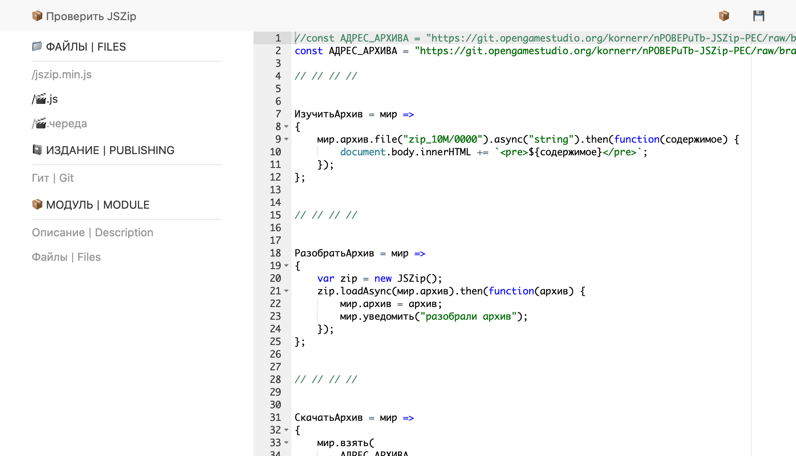
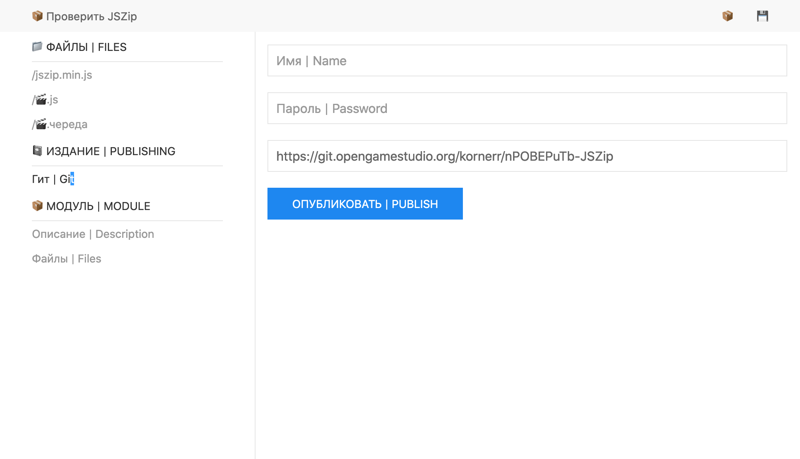
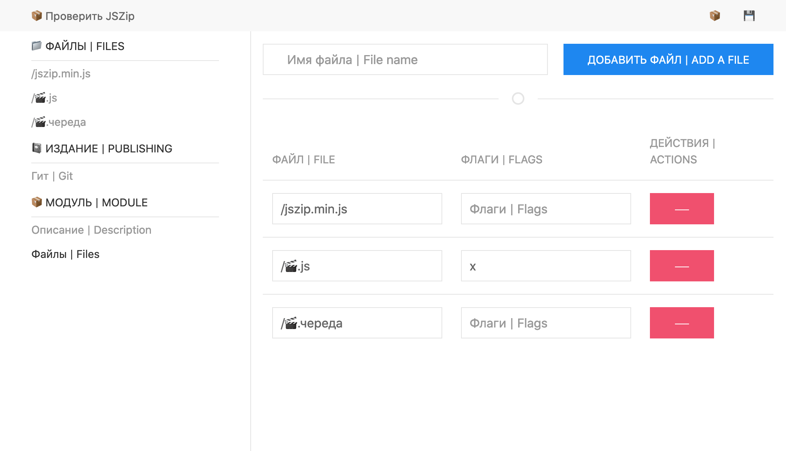
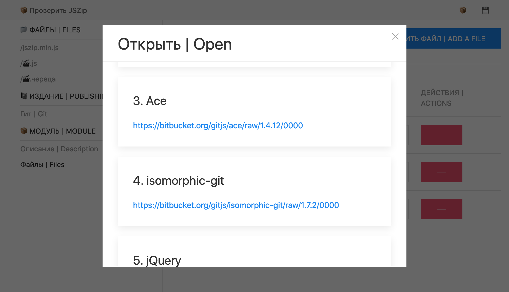
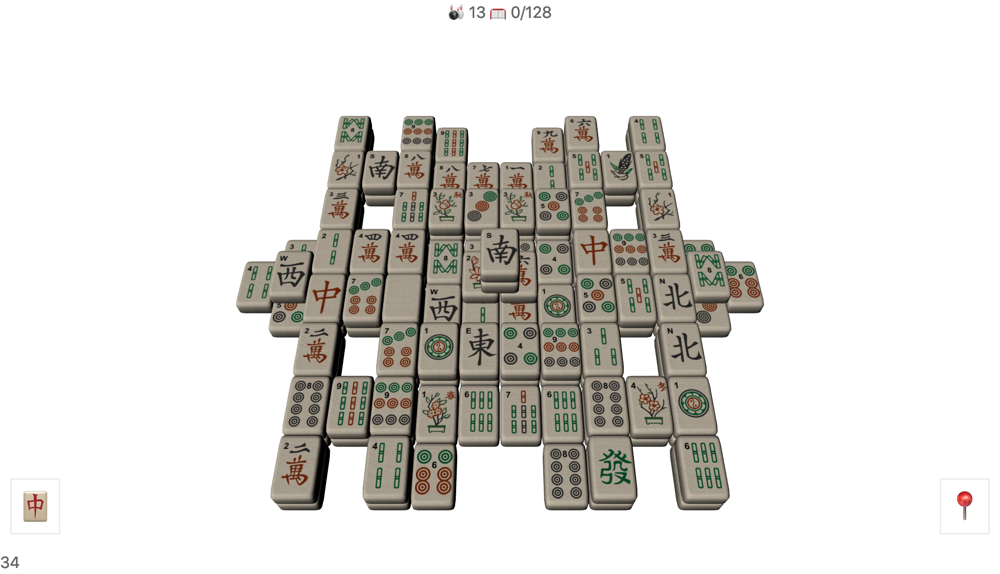
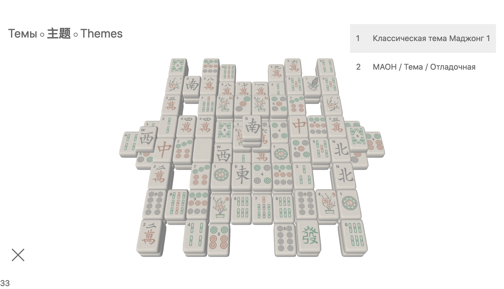
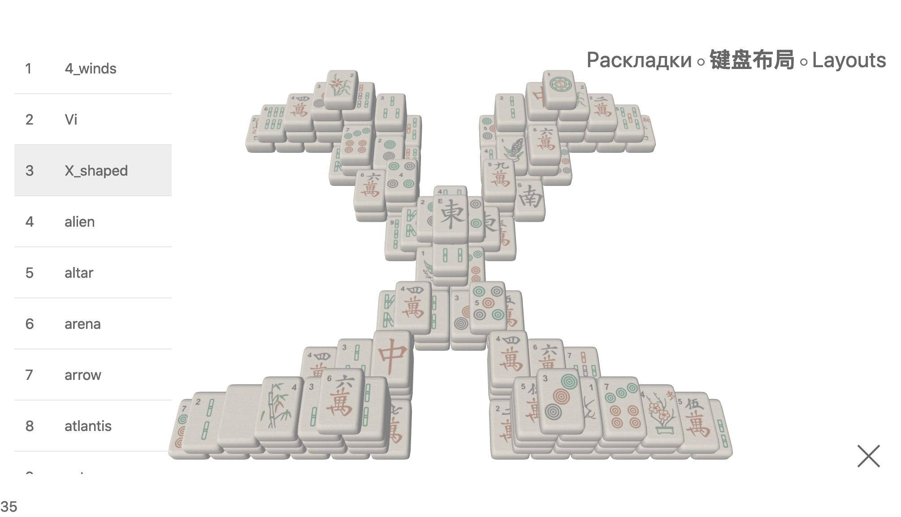

2021-01-28 00:00

In this article Michael shares his experience of creating durable applications.
In 2013 Canonical tried to crowdfund Ubuntu Edge smartphone. Its main feature could be the ability to use the smartphone as a full-fledged PС. Unfortunatly, the crowdfunding campaign did not accumulate enough money, so a dream of having a universal device remained to be the dream.
I've been searching for universality, too, on the software side, not the hardware one. Today I can confidently say I found the necessary combination: Git and JavaScript.
As you know, I have already described the benefits of browser applications (nCKOB static site generator) and the benefits of using Git instead of yet another back-end with API (GitBudget to track personal spendings). Once GitBudget was out, I spent the remaining 2020 to build a system allowing one to create browser applications right inside browsers. GitJS is the name of that system.
The system uses Git for:
Thus, Git is not used for version control, Git is merely a widespread technology to keep data with read (HTTP) and write permissions. This might be somewhat counterintuitive. However, this allows everyone to decide where and how to keep data: paid/free, locally/remotely.
You might argue that FTP/rsync could be used instead of Git if we only need to keep data. However, there are no widespread services like SourceForge/GitHub/BitBucket/GitLab for FTP/rsync. Also, there are no implementations of FTP/rsync that work inside browsers, and Git has Isomorphic-Git.
JS (alongside HTML/CSS) is used for:
GitJS consists of the following three mandatory parts (in the order of execution):
? symbolStartup module may introduce absolutely any additional rules to GitJS ones or even replace them, so your fantasy here is only limited by what browsers permit: e.g., you can't erase all hard drive files of a user.
I'd like to stress that having an HTML page and Git web service locally lets you use GitJS without the Internet.
Currently, the editor has very basic functionality:
1.1. Editing of module's text files

1.2. Publishing changes to Git

Note: browsers keep passwords.
1.3. Editing the structure of a module

1.4. Opening previously loaded modules from LocalStorage/IndexedDB

1.5. Saving changes locally into LocalStorage/IndexedDB
Here's the editor's last version: http://gitjs.org/📦. The first run takes some time, be patient.
Currently, the game has the following functionality:
2.1. Selection and removal of tiles off the field according to Mahjong solitaire rules

2.2. Tile theme selection

2.3. Field layout selection

2.4. Victory/loss detection
Here's the game's last version: http://gitjs.org/🀄/1.0.14.
In the end, this game will match the original Mahjong (released several years ago) in terms of features.
GitJS limitations stem from browser ones.
1. CORS
To be able to publish changes to Git, we have to meet CORS restrictions. Currently, major services do not allow to publish Git changes easily, so one would have to use either a proxy, or a personal Git service.
2. Full-screen surfing on mobile
Nowadays, browsers collapse navigation and other controls when you scroll a page that doesn't fit into available space. This leaves the space at the top and the bottom of the screen free of controls but still unusable for touches because these touches bring those controls back. Such behaviour is very inconvenient for games.
Mahjong solitaire works around that problem by supporting portrait mode: you can shift the field left/right. However, such a solution has its own drawbacks: one cannot see the field at a single glance, which makes the game harder to play.
nCKOB mentioned earlier will be rewritten as GitJS application. This would allow anyone to create statically generated sites without leaving a browser. We'll see how this goes.
PS: The first image is "Bayan" picture created by Viktor Vasnetsov in 1910.